Datová úložiště a souborové systémy¶
Tato kapitola pokrývá tři vzájemně provázaná témata: fyzická datová úložiště (HDD a SSD), technologie jejich sdružování a zabezpečení (RAID) a způsoby síťového připojení (DAS/NAS/SAN), následně implementaci souborových systémů na disku (rozložení dat, alokační strategie FAT a UFS/i-node, adresáře, sdílené soubory) a konečně podporu souborových systémů v jádře OS (VFS, FUSE, cache, žurnálování) a moderní přístupy (B+ stromy, ZFS, BTRFS). Student po prostudování této kapitoly pochopí, jak je informace fyzicky uložena na médiích a jak nad ní operační systém buduje abstrakci souborového systému.
Obsah stránky
- Datová úložiště
- HDD (Hard Disk Drive)
- SSD (Solid State Drive)
- RAID (Redundant Array of Independent Disks)
- Typy připojení datového úložiště
- Implementace souborových systémů
- FAT (File Allocation Table)
- I-node (Index Node)
- Adresáře a sdílené soubory
- Souborové systémy v OS
- Moderní souborové systémy
- Shrnutí
- Klíčové pojmy
Datová úložiště¶
Datové úložiště (data storage, secondary storage, external memory) je hardware sloužící k dlouhodobému, perzistentnímu uložení informací. Na rozdíl od operační paměti (RAM) je nevolatilní — obsah přežije vypnutí napájení.
Úložný prostor se dělí na sektory (nejmenší adresovatelná jednotka, typicky 512 B nebo 4 KB). Sektory se dále seskupují do diskových oblastí (partitions, volumes), které spravuje buď OS (pomocí souborového systému) nebo přímo aplikace (databáze v proprietárním formátu).
Nejrozšířenější typy úložišť jsou:
- HDD (Hard Disk Drive) — magnetický pevný disk,
- SSD (Solid State Drive) — flash paměť,
- RAID (Redundant Array of Independent Disks) — pole nezávislých disků.
Úložiště lze k výpočetnímu systému připojit třemi základními způsoby: DAS, NAS nebo SAN.
Srovnání technologií¶
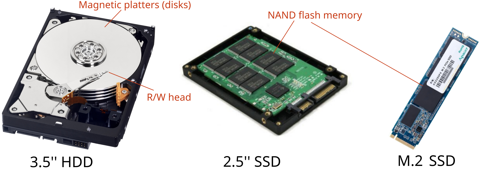
| Parametr | 3,5" HDD | 2,5" SSD (SATA) | M.2 SSD (NVMe) |
|---|---|---|---|
| Typ média | Magnetické plotny | NAND flash | NAND flash |
| Rozhraní | SATA | SATA | PCIe (NVMe) |
| Sekvenční přenos | 100–250 MB/s | ~550 MB/s | 3–12 GB/s |
| Latence přístupu | ~10 ms | ~100 µs | ~10 µs |
| Počet IOPS | stovky | desítky tisíc | statisíce–miliony |
| Pohyblivé části | ano | ne | ne |
| Cena za GB | nízká | střední | vyšší |
| Typické použití | archivy, zálohy | systémový disk | náročné aplikace |
HDD (Hard Disk Drive)¶
HDD je magnetické rotační médium. Data jsou uložena pomocí změny směru magnetizace na feromagnetických plotnách, které se otáčejí konstantní rychlostí.
Architektura HDD¶
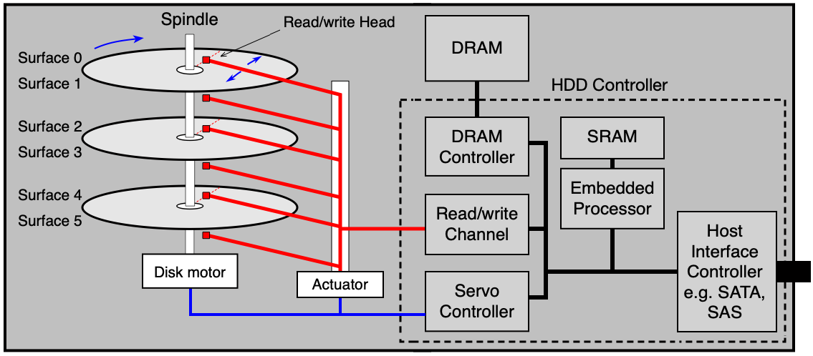
HDD se skládá z těchto klíčových součástí:
Mechanické části:
- Několik ploten (platters) tvořených feromagnetickým materiálem, každá má dva povrchy.
- Magnetické hlavičky (heads) pro čtení a zápis — všechny jsou vždy ve stejné vzdálenosti od středu (pohybují se synchronně).
Elektrické části:
- Řadič disku (disk controller) s procesorem, firmwarem a pomocnými obvody.
- Vyrovnávací paměť (buffer cache, DRAM) — dočasné uložení čtených/zapisovaných dat, může mít stovky MB.
Princip záznamu¶
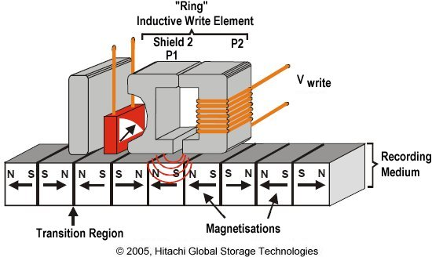
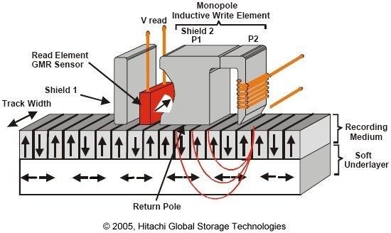
Informace je kódována změnou směru magnetizace mezi sousedními magnetickými doménami. Existují dvě generace technologie:
- Longitudinal Recording — magnetické domény orientovány rovnoběžně s povrchem plotny; starší HDD, omezená hustota záznamu.
- Perpendicular Recording — domény kolmo na povrch; moderní HDD, výrazně vyšší hustota. Pod záznamovou vrstvou se nachází soft magnetic underlayer uzavírající magnetický tok.
Zápis probíhá řízením směru proudu v zápisové hlavě (vytváří magnetické pole). Čtení probíhá indukčně — čtecí hlava registruje změnu magnetického toku.
Geometrie disku¶
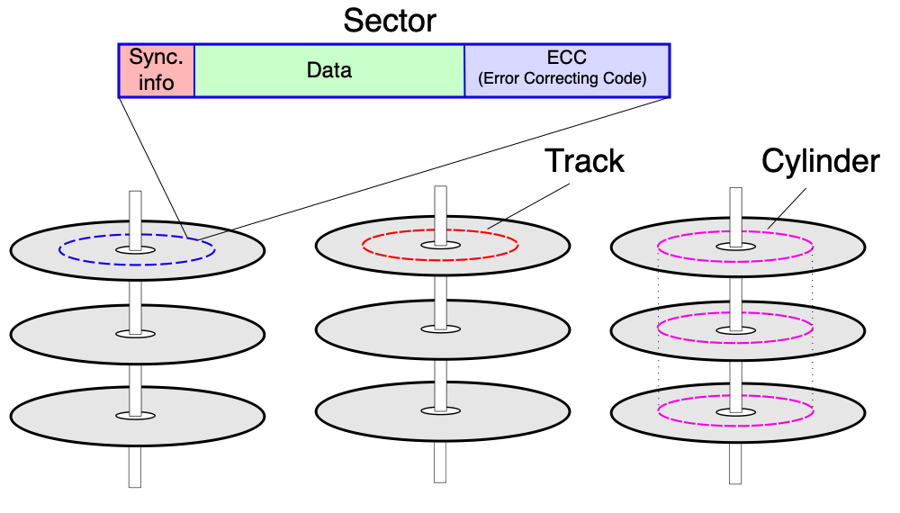
HDD pracuje s těmito geometrickými pojmy:
- Sektor (sector) — nejmenší adresovatelná jednotka; obsahuje synchronizační informace, data (4096 B nově, 512 B starší) a ECC (Error Correction Code).
- Stopa (track) — množina sektorů na jednom povrchu ve stejné vzdálenosti od středu; stopy se číslují od vnějšího okraje.
- Cylindr (cylinder) — množina všech stop o daném poloměru na všech površích (nad sebou ve všech povrchách).
Adresování sektorů:
- CHS (Cylinder-Head-Sector) — starší způsob, adresa je trojice [cylindr, povrch, sektor].
- LBA (Logical Block Addressing) — novější, sektory číslovány sekvenčně od 0 (začíná se od vnějšího okraje prvního cylindru).
Zone Bit Recording (ZBR): Stopy jsou rozděleny do zón. V rámci zóny je konstantní počet sektorů na stopu. Vnější zóny mají více sektorů na stopu než vnitřní (fyzicky jsou delší).
Rychlost přístupu k datům¶
Čas potřebný k přečtení jednoho sektoru závisí na třech složkách:
- Doba vystavení (seek time) — pohyb hlaviček nad správný cylindr; typicky 1–10 ms.
- Rotační zpoždění (rotational delay) — čekání, než se správný sektor otočí pod hlavičku; průměrně polovina doby jedné otáčky; při 5 000–15 000 RPM jde o 6–2 ms.
- Čas přenosu dat — samotný přenos obsahu sektoru.
Příklad: sekvenční vs. náhodný přístup
Disk s parametry: 1 povrch, 10 000 RPM, sektor 512 B, 320 sektorů na stopu, průměrný seek 10 ms, seek na sousední stopu 1 ms.
- Průměrné rotační zpoždění:
(0 + 60/10000) / 2 = 3 ms - Počet stop pro 2560 sektorů:
2560 / 320 = 8 stop - Sekvenční čtení 2560 sektorů (sousední stopy):
- První stopa: 10 (seek) + 3 (rotace) + 6 ms (přenos celé stopy) = 19 ms
- Každá další stopa: 1 (seek) + 3 (rotace) + 6 (přenos) = 10 ms
- Celkem:
19 + 7 × 10 = 89 ms - Náhodný přístup k 2560 sektorům:
- Jeden sektor: 10 + 3 + 6/320 ≈ 13,02 ms
- Celkem:
2560 × 13,02 ≈ 33,3 s
Sekvenční přístup je tedy zhruba 375× rychlejší než náhodný! Proto je pro HDD klíčové minimalizovat pohyb hlaviček.
U zkoušky
Vzorce pro výpočet doby přístupu: T_celkem = seek_time + rotational_delay + transfer_time. Průměrné rotační zpoždění = polovina doby jedné otáčky = 60 / (2 × RPM) sekund.
Algoritmy plánování přístupu na disk¶
OS (nebo přímo řadič disku přes NCQ/TCQ) seřazuje frontu požadavků tak, aby minimalizoval pohyb hlaviček.
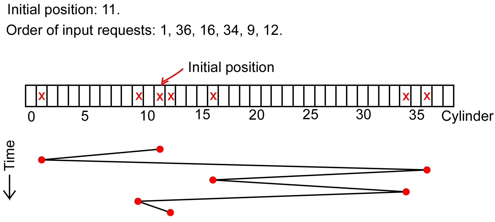
FIFO (First-In-First-Out): Požadavky obslouženy v pořadí příchodu. Spravedlivé, ale výkonově neoptimální.
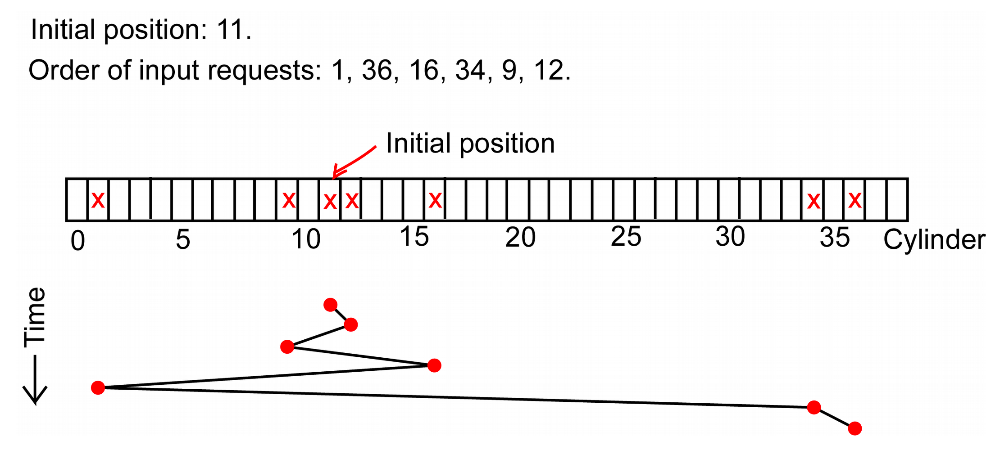
SSTF (Shortest Service Time First): Nejdříve obsluha požadavku nejblíže aktuální pozici hlavičky. Lepší výkon než FIFO, ale hrozí stárnutí (starvation) požadavků ze vzdálených cylindrů — hlavičky tendují setrvávat uprostřed disku.
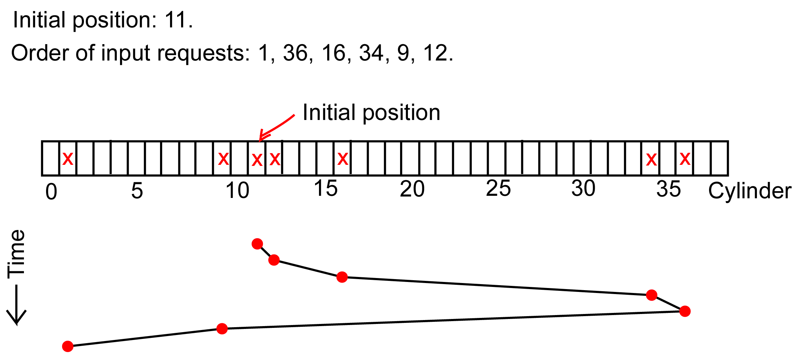
SCAN (výtahový algoritmus / elevator algorithm): Hlavičky se pohybují jedním směrem, obsluhují všechny požadavky, pak se otočí a obsluhují v opačném směru. Omezuje stárnutí, ale ne zcela.
N-step SCAN: Fronta požadavků se rozdělí na dílčí fronty délky N, každá zpracována algoritmem SCAN. Garantuje, že požadavek může být předskočen maximálně N−1 jinými. Je zobecněním: N=1 → FIFO, N→∞ → SCAN.
SSD (Solid State Drive)¶
SSD neobsahuje žádné pohyblivé části, proto má konstantní (na poloze nezávislou) latenci přístupu.
Výhody: rychlý přístup k datům, nízká spotřeba, malé rozměry, bezhlučnost, odolnost vůči otřesům.
Nevýhody: menší kapacita za stejnou cenu, omezený počet zápisů, náchylnost na vyšší teploty (hrozí ztráta dat).
Technologie NAND flash — floating gate MOSFET¶
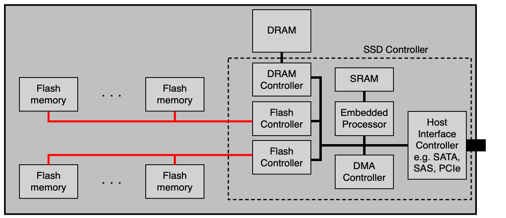
Data se ukládají do pamětových buněk tvořených speciálním tranzistorem — floating gate MOSFET. Jde o upravený MOSFET, který má mezi řídicí bránou (control gate) a substrátem vloženou vodivou plovoucí bránu (floating gate) izolovanou z obou stran. Přítomnost nebo absence elektrického náboje na plovoucí bráně představuje uloženou informaci.
- Přítomnost náboje = logická 0
- Absence náboje = logická 1
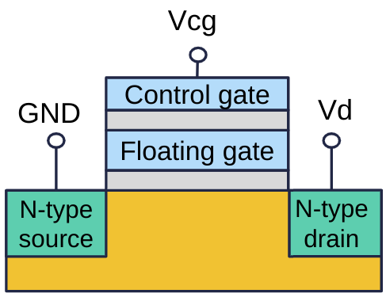
Tři základní operace:
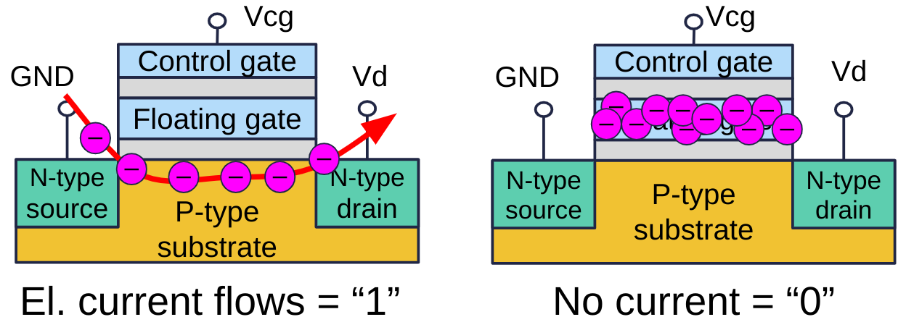
- Čtení: Na řídicí bránu se přivede čtecí napětí Vread (1–2 V). Pokud plovoucí brána není nabitá, tranzistor se otevře (logická 1). Pokud je nabitá, zvýší se prahové napětí a tranzistor se neotevře (logická 0).
- Programování (zápis 0): Přivedením vysokého zapisovacího napětí Vwrite (15–20 V) na řídicí bránu a uzemněním substrátu se náboj přenese na plovoucí bránu (kvantový tunelový jev).
- Mazání (zápis 1): Náboj se odstraní přivedením Vwrite na substrát a uzemněním řídicí brány.
Opotřebení buněk
Vysoké napětí Vwrite (15–20 V) při programování/mazání způsobuje opotřebení izolační vrstvy kolem plovoucí brány. To je fyzikální příčina omezeného počtu zápisů u NAND flash.
NAND organizace a operace¶
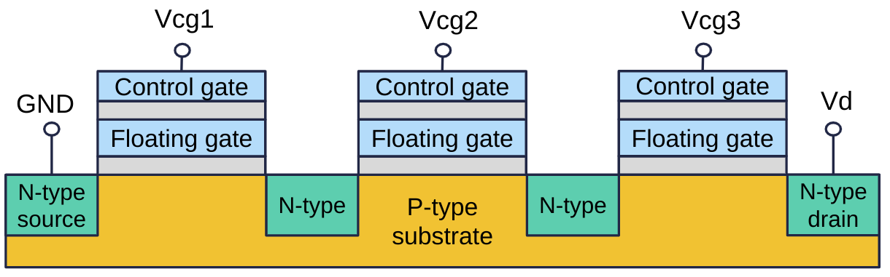
Buňky jsou zapojeny do série připomínající hradlo NAND — odtud název NAND flash. Při čtení konkrétní buňky se na ni přivede Vread a na ostatní Vpass (4–6 V) — napětí dostatečně vysoké k otevření tranzistoru bez ohledu na náboj plovoucí brány, ale dostatečně nízké, aby nedocházelo k přenosu náboje.
Mazání probíhá vždy nad celým blokem najednou — náboj se odstraňuje ze všech buněk v bloku společně (přes společný substrát), nelze mazat stránky jednotlivě.
SLC, MLC, TLC a QLC¶
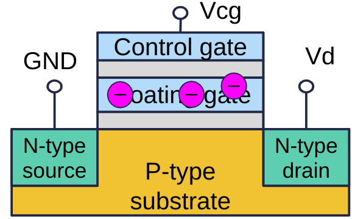
Přivedením různého množství náboje na plovoucí bránu lze nastavit různé prahové napětí — tranzistor se otevírá při různých napětích. To umožňuje ukládat do jedné buňky více bitů.
| Typ | Bity/buňka | Čtení/zápis (MB/s) | Počet zápisů | Spolehlivost | Použití |
|---|---|---|---|---|---|
| SLC | 1 | 200–500 / 20–40 | 50 000–100 000 | Velmi vysoká | Průmysl, cache |
| MLC | 2 | 150–400 / 10–30 | 3 000–10 000 | Vysoká | Enterprise SSD |
| TLC | 3 | 100–300 / 5–15 | 1 000–3 000 | Střední | Spotřební SSD |
| QLC | 4 | 50–200 / 2–10 | 100–1 000 | Nízká | Levné SSD |
Organizace SSD — stránky, bloky a FTL¶
Stránka (page) — nejmenší adresovatelná jednotka pro čtení a zápis; typická velikost 4 KB, 8 KB nebo 16 KB.
Blok (block) — seskupení stránek, které lze najednou vymazat; mazání nelze provádět po stránkách.
SSD navenek používá LBA (Logical Block Addressing) pro kompatibilitu s HDD. Interně firmware spravuje mapování přes Flash Translation Layer (FTL), který zajišťuje:
- Mapování LBA → fyzické stránky/bloky (dynamické — mapování se v čase mění),
- Wear leveling — rovnoměrné rozložení zápisů, aby se neopotřeboval jen jeden blok,
- Garbage collection — správa a uvolňování neplatných bloků,
- Bad Block Management — správa poškozených bloků.
Srovnání HDD a SSD¶
| Parametr | HDD (SATA) | SSD (SATA) | SSD (NVMe) |
|---|---|---|---|
| Sequential Read (MB/s) | 250 | 555 | 6 800 |
| Sequential Write (MB/s) | 250 | 520 | 6 000 |
| Random Read 4 KB (IOPS) | 240 | 98 000 | 1 000 000 |
| Random Write 4 KB (IOPS) | 240 | 75 000 | 180 000 |
| Latence čtení | avg 4,16 ms | max 0,4 ms | 0,1 ms |
| Kapacita | až 24 TB | 8 TB | 8 TB |
| Cena (Kč/TB) | ~700 | ~2 000 | ~2 100 |
| Trvanlivost (offline) | > 10 let | TLC: 1–3 roky | — |
Kdy použít HDD a kdy SSD?
HDD se hodí pro archivaci dat a méně časté používání (nízká cena za GB, dlouhá trvanlivost v napájeném stavu). SSD se hodí pro aktivní používání — systémové disky, databáze, aplikace citlivé na latenci. Aktivní SSD si firmware sám obnovuje data (data refresh), čímž prodlužuje životnost.
RAID (Redundant Array of Independent Disks)¶
RAID je způsob sdružení více fyzických disků do jednoho logického celku. Myšlenka byla publikována v roce 1988 na Universitě Californie v Berkeley. Kromě RAID 0 jsou všechny varianty redundantní — část kapacity ukládá záložní informace, takže data přežijí výpadek jednoho nebo více disků.
Vlastnosti, které RAID umožňuje konfigurovat:
- kapacita logického disku,
- rychlost sekvenčního čtení/zápisu,
- počet R/W operací za sekundu (IOPS),
- spolehlivost (odolnost vůči výpadku disků).
Softwarový vs. hardwarový RAID¶
Softwarový RAID:
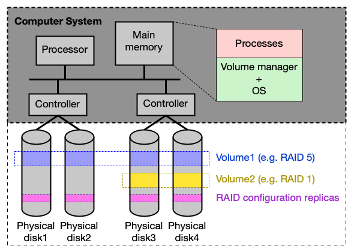
Fyzické disky jsou standardně připojeny přes sběrnice a spravovány OS. Volume manager (VM) zajišťuje mapování dat na disky a výpočet parity. Příklady: Logical Volume Manager (LVM v Linuxu), Veritas VM.
Hardwarový RAID:
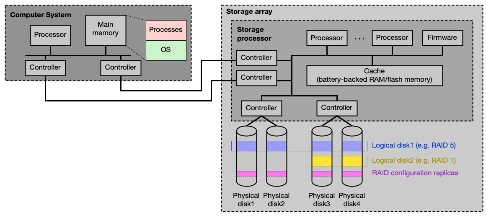
Speciální hardware obsahuje vlastní procesory, paměť s firmwarem a zálohovací paměť chráněnou proti výpadku napájení. OS vidí pouze logický disk, nikoliv fyzické disky HW RAIDu.
RAID 0 — zřetězení (concatenation) a prokládání (striping)¶
RAID 0 — zřetězení (JBOD):
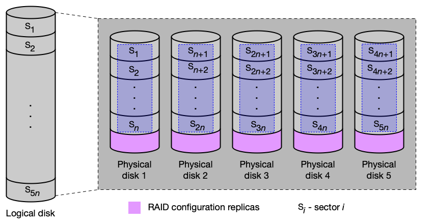
Data jsou ukládána postupně na disky: jakmile se zaplní první disk, data přecházejí na druhý atd. Redundance je 0 % — výpadek jediného disku způsobí ztrátu všech dat. Výkon je shodný s jedním diskem. Použití: prosté navýšení kapacity.
RAID 0 — prokládání (striping):
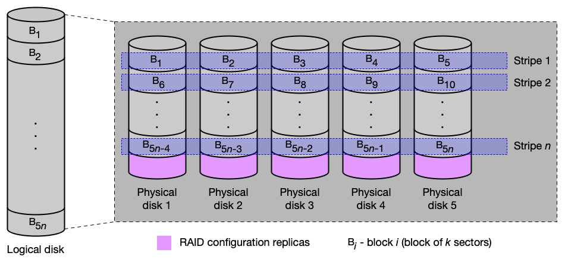
Administrátor definuje blok jako k sousedních sektorů. Data jsou cyklicky ukládána po blocích na jednotlivé disky (první blok na disk 1, druhý na disk 2, ..., po obejití všech disků opět na disk 1). Necht' m je počet fyzických disků:
- Redundance: 0 % — výpadek jednoho disku = ztráta všech dat.
- R/W se zrychlí až m-krát, pokud přenášíme data o velikosti m bloků.
- Počet paralelních R/W operací velikosti 1 bloku se zvýší až m-krát.
Použití: navýšení kapacity a výkonu.
U zkoušky
Striping zrychluje velké I/O paralelismem — m disků → m-násobná přenosová rychlost pro velká sekvenční data. Žádná ochrana dat!
RAID 1 — zrcadlení (mirroring)¶
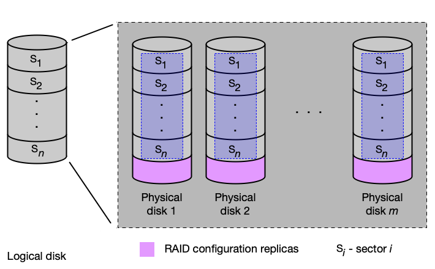
Stejná data jsou uložena na všechny fyzické disky (m kopií). Typicky dvě kopie, ale může být více.
Vlastnosti pro m disků:
- Redundance:
100 × (m − 1) / m% → data přežijí výpadek m−1 disků. - Čtení 1 bloku: stejná rychlost jako fyzický disk.
- Čtení m bloků: až m-násobné zrychlení (různé bloky z různých disků).
- Zápis: stejná rychlost jako fyzický disk (na každý disk zapsat m bloků).
Použití: zabezpečení dat.
RAID 1+0 (RAID 10) — zrcadlení + prokládání¶
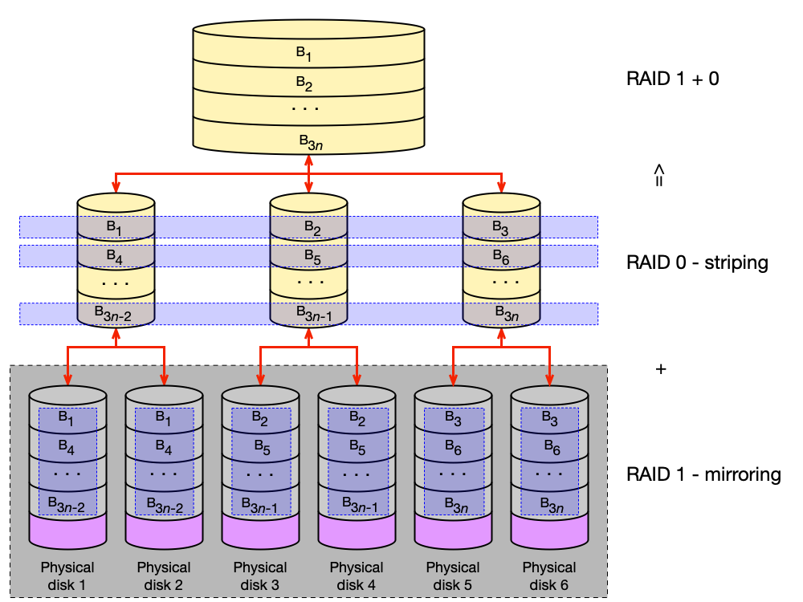
RAID 10 kombinuje výhody RAID 1 (redundance) a RAID 0 (výkon prokládání). Disky jsou nejdříve zdvojeny zrcadlením a výsledné páry jsou prokládány.
Vlastnosti pro m disků (zrcadlení po dvou):
- Redundance: 50 % → data přežijí výpadek teoreticky m/2 disků (po jednom z každého zrcadla).
- Sekvenční R/W: až (m/2)-násobné zrychlení.
- Paralelní R/W operací: až m-násobné (IOPS).
- Obnova po výpadku: úměrná kapacitě jednoho fyzického disku (rychlá).
RAID 2, 3, 4¶
Tyto varianty se v praxi běžně nepoužívají:
- RAID 2: prokládání po bitech + Hammingův kód.
- RAID 3: prokládání po bajtech + parita na jednom dedikovaném disku.
- RAID 4: prokládání po blocích + parita na jednom disku. Parita:
P(i, j) = B_i XOR B_(i+1) XOR ... XOR B_j. Problém: paritní disk je při větším počtu zápisů přetížen.
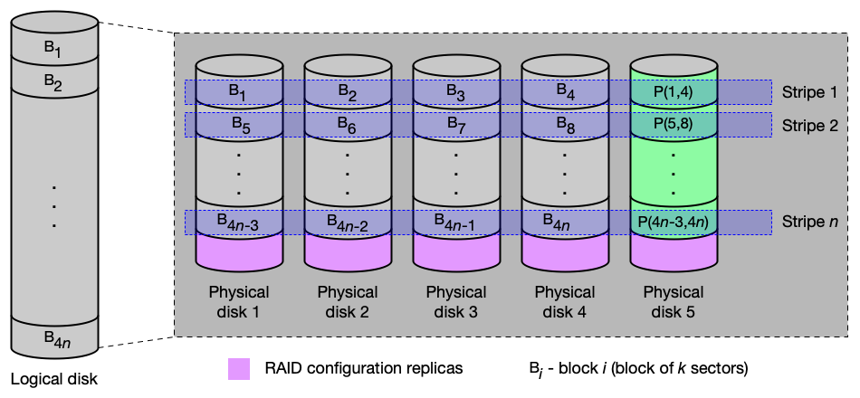
RAID 5 — prokládání s distribuovanou paritou¶
Princip: Prokládání po blocích na m discích + parita cyklicky rozložená na všech discích (každý disk funguje střídavě jako datový i paritní).
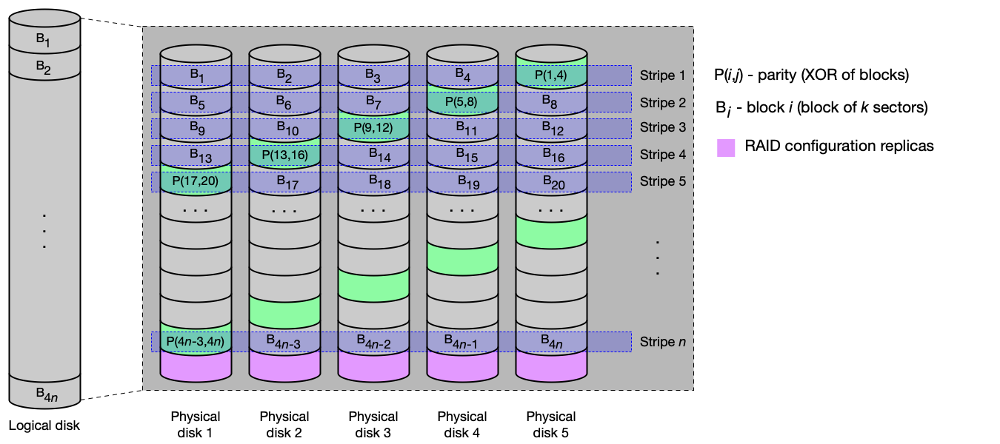
Vlastnosti:
- Redundance:
100/m% → výpadek jednoho disku → data dostupná, ale degradovaný výkon. - Čtení: zrychlení až (m−1)-násobné pro data (m−1) bloků.
- Zápis: pomalejší (zejména u SW RAID) — každý zápis dat vyžaduje i aktualizaci parity (čtení starých dat, čtení staré parity, výpočet nové parity, zápis dat, zápis parity = 4 I/O operace na 1 logický zápis).
- IOPS: až m-násobné pro nezávislé požadavky.
Použití: navýšení kapacity, zabezpečení dat a zrychlení čtení.
U zkoušky
Výpočet parity v RAID 5: Pro m disků (disk0 ... disk_(m-1)), kde jeden blok pruhu (stripe) nese paritu P: P = D0 XOR D1 XOR ... XOR D_(m-2). Při výpadku disku D_k lze obnovit: D_k = P XOR D0 XOR ... XOR D_(k-1) XOR D_(k+1) XOR ... (XOR všech ostatních). Příklad: m=3 disky, blok pruhu D0=0b10110, D1=0b01101 → P=0b11011. Výpadek D0 → D0=P XOR D1=0b11011 XOR 0b01101=0b10110.
RAID 6 — prokládání s dvojitou distribuovanou paritou¶
Princip: Prokládání po blocích na m discích + dvojí parita cyklicky rozložená na všech discích (dva různé paritní výpočty, typicky XOR a Reedův-Solomonův kód).
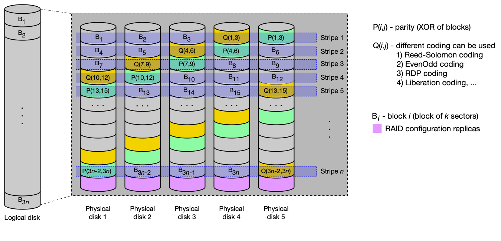
Vlastnosti:
- Redundance:
200/m% → výpadek dvou disků → data dostupná. - Čtení: zrychlení až (m−2)-násobné.
- Zápis: pomalejší než RAID 5 (výpočet dvou parit).
- IOPS čtení: až m-násobné.
Použití: navýšení kapacity, zabezpečení dat i výkonu čtení, vyšší odolnost.
Srovnání typů RAID¶
| Vlastnost | RAID 0 (striping) | RAID 1 | RAID 10 | RAID 5 | RAID 6 |
|---|---|---|---|---|---|
| Min. počet disků | 2 | 2 | 4 | 3 | 4 |
| Ochrana dat | Žádná | Výpadek 1 disku | Výpadek 1 disku (ze dvojice) | Výpadek 1 disku | Výpadek 2 disků |
| Výkon čtení | Vysoký | Vysoký | Vysoký | Vysoký | Vysoký |
| Výkon zápisu | Vysoký | Střední | Střední | Nízký | Nízký |
| Výkon čtení (při výpadku) | — | Střední | Vysoký | Nízký | Nízký |
| Výkon zápisu (při výpadku) | — | Vysoký | Vysoký | Nízký | Nízký |
| Využitá kapacita | 100 % | 50 % | 50 % | 67–94 % | 50–88 % |
U zkoušky
Využitá kapacita pro m disků: RAID 5 = (m−1)/m, RAID 6 = (m−2)/m. Příklad: RAID 5 se 6 disky → 5/6 ≈ 83 % kapacity pro data.
Typy připojení datového úložiště¶
DAS (Direct-Attached Storage)¶
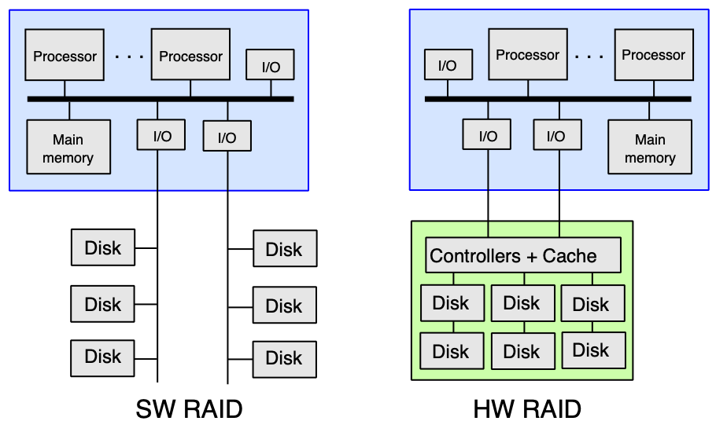
Úložiště je připojeno přímo k systému přes V/V porty (SATA, SAS, Ethernet, Fibre Channel). OS/aplikace přímo vidí jednotlivé sektory. Některé technologie (SCSI) umožňují multihosting — jedno úložiště připojit k více systémům současně.
NAS (Network-Attached Storage)¶
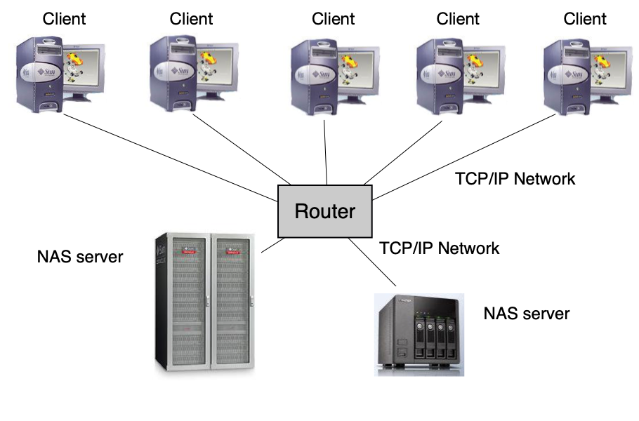
NAS je samostatný server (výpočetní systém + OS + datové úložiště). Data jsou přístupná přes síťové protokoly na úrovni souborového systému:
- NFS (Network File System) — unixový standard,
- SMB (Server Message Block) / Samba / CIFS — standard MS Windows.
Klient nevidí fyzické disky ani sektory — komunikuje na úrovni adresářů a souborů.
SAN (Storage Area Network)¶
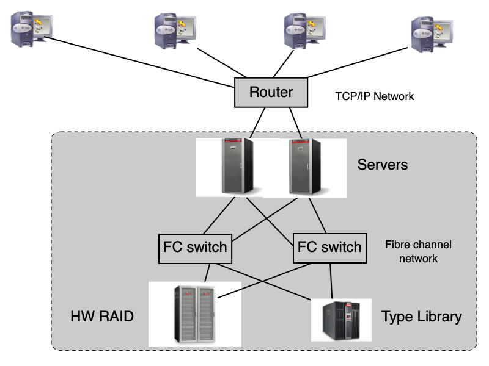
SAN je oddělená síť datových úložišť. OS/aplikace vidí jednotlivé sektory (jako u DAS), ale přes síť (Ethernet, Fibre Channel). Klíčové vlastnosti:
- Multihosting — jedno úložiště lze připojit k více systémům.
- Multipathing — mezi systémem a úložištěm existuje více nezávislých cest (zvyšuje propustnost i odolnost).
| DAS | NAS | SAN | |
|---|---|---|---|
| Přístup OS | sektory | soubory | sektory |
| Připojení | přímé | síť (IP) | SAN (FC/IP) |
| Multihosting | někdy | ano | ano |
| Multipathing | ne | ne | ano |
Implementace souborových systémů¶
Souborový systém (FS) poskytuje abstrakci nad fyzickým úložištěm — přeměňuje surové sektory na hierarchii souborů a adresářů. Každý FS musí řešit: jak rozložit struktury na disku, jak spravovat volný prostor, jak alokovat obsah souboru a jak implementovat adresáře.
FS z pohledu uživatele¶
Adresáře umožňují hierarchické uspořádání dat:
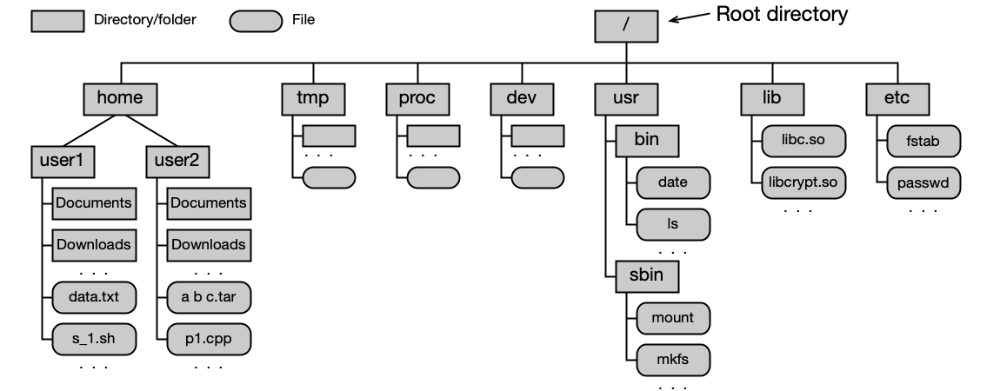
- Cesta může být absolutní (od kořene:
/home/user1/data.txt) nebo relativní (od pracovního adresáře). - Typické operace:
Create,Delete,Opendir,Closedir,Readdir,Seekdir,Rename,Link,Unlink.
Soubor = jméno + atributy + obsah.
- Atributy: typ (soubor/adresář/link), vlastníci, přístupová práva (rwx, ACL, setuid-bit), časy přístupu a modifikace.
- Obsah: pole bajtů uložených v datových blocích FS; OS neinterpretuje obsah (výjimka: spustitelné soubory).
- Typické operace:
Create,Delete,Open,Close,Read,Write,Seek,stat/access,chmod/chown,Rename.
FS z pohledu administrátora¶
Disk je rozdělen na oblasti (partitions):
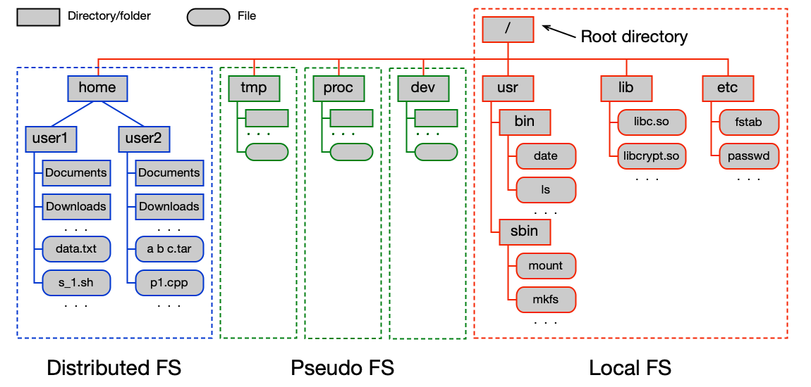
- Label disku (disk label) — na začátku disku; obsahuje tabulku oblastí (partition table) a zavaděč OS. Formáty: MBR (Master Boot Record), EFI GPT (GUID Partition Table).
- Diskové oblasti (partitions/slices) — každá oblast obsahuje jeden FS.
Instalace FS → vytvoření struktur (příkaz mkfs), připojení do stromu adresářů (mount), odpojení (umount). Strom adresářů v Unixu typicky kombinuje více FS najednou:
- do
/lokální FS, - do
/proc,/dev,/tmppseudoFS (existují pouze v RAM), - do
/homemůže být připojen distribuovaný FS (NFS).
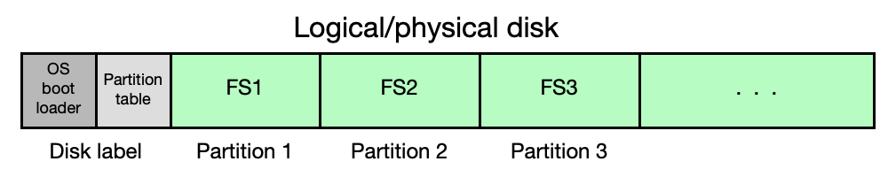
Rozložení dat ve FS (FS layout)¶
Oblast disku s FS typicky obsahuje tyto části:
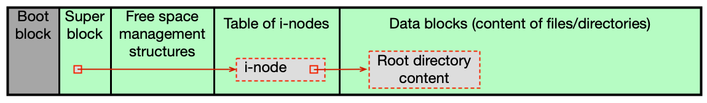
- Boot block — kód zavaděče OS (nebo prázdný, pokud oblast není bootovatelná).
- Super block — typ FS, velikost datových bloků, celková velikost, obsazenost, adresy klíčových struktur; uložen i v záložních kopiích.
- Struktury pro správu volného prostoru — bitová mapa nebo zřetězený seznam volných bloků/i-nodů.
- Tabulka i-nodů — pole i-nodů; každý soubor/adresář má svůj i-node.
- Datové bloky — samotný obsah souborů a adresářů.
Rozložení v UFS (Unix File System):
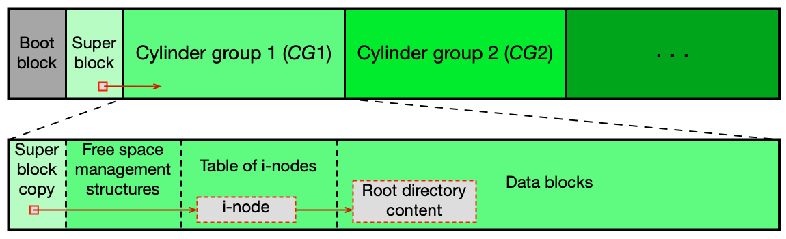
UFS rozděluje disk na Cylinder Groups (CG) — stejně velké skupiny cylindrů. Každá skupina má vlastní kopii klíčových struktur (zálohový superblok, bitmap, i-nody). Soubor je vždy alokován uvnitř jedné CG → hlavičky HDD se pohybují pouze v rámci CG → lepší výkon.
Datový blok vs. sektor
Sektor je nejmenší adresovatelná jednotka fyzického úložiště (512 B nebo 4 KB). Datový blok (nebo cluster v MS Windows) je logická jednotka FS — typicky větší (1 KB až 2 MB). Administrátor volí velikost datového bloku při mkfs podle očekávaných velikostí souborů. Větší bloky = menší metadata, ale větší vnitřní fragmentace (malý soubor „zabere" celý blok).
Příklady: UFS/Solaris 8 KB, VXFS 1/2/4/8 KB, FAT32 4–32 KB, NTFS 4 KB–2 MB.
Správa volného prostoru¶
Pro správu volných datových bloků a i-nodů se používají dvě klasické struktury:
- Bitová mapa (bitmap) — 1 bit na blok (0 = volný, 1 = obsazený); kompaktnější, rychlé nalezení volného bloku bitovými operacemi.
- Zřetězený seznam (free list) — uložen přímo ve volných datových blocích; po připojení FS se načte do paměti jen část.
Bitová mapa je zpravidla výhodnější; zřetězený seznam je efektivnější při téměř zaplněném FS (nemusí se udržovat celá bitmapa).
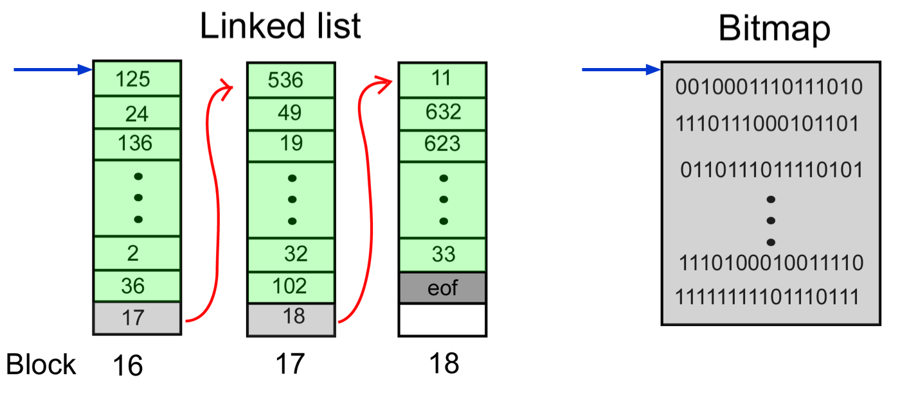
Alokace obsahu souboru¶
Obsah souboru je uložen v datových blocích. FS si musí pamatovat, které bloky patří ke kterému souboru.
Alokace po souvislých oblastech (contiguous allocation)¶
Obsah souboru je uložen v jedné nebo několika souvislých oblastech bloků. FS si pamatuje pouze adresu prvního bloku a počet bloků.
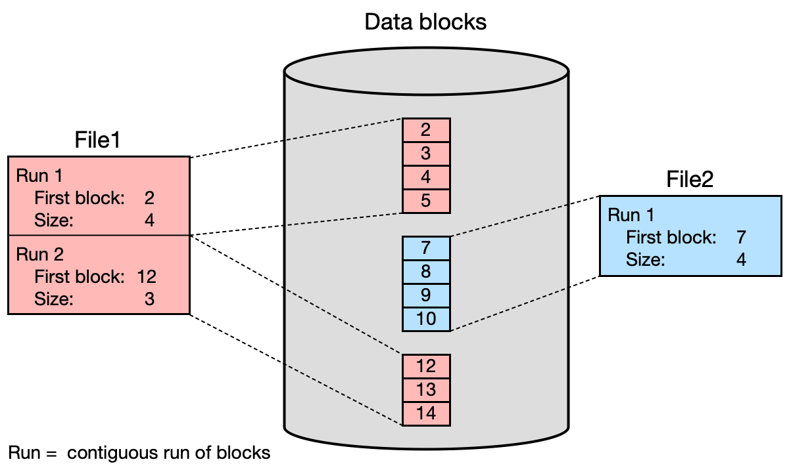
Výhody: - Malá metadata (jen adresa + délka oblasti). - Vynikající výkon při sekvenčním přístupu a velkých souborech.
Nevýhody: - Fragmentace FS (volný prostor se rozpadá na malé ostrůvky → nutná defragmentace). - Složitá alokace při změně velikosti souboru.
Příklady: VXFS (Veritas File System), NTFS.
Alokace po jednotlivých blocích¶
Obsah souboru je rozptýlen do libovolných volných bloků; FS si musí pamatovat adresy všech bloků.
Výhody: - Bez fragmentace (každý volný blok je použitelný). - Dobrý výkon při náhodném přístupu a malých souborech.
Nevýhody: - Velká metadata (adresy všech bloků). - Horší sekvenční výkon (I/O přerušované výpočtem adresy).
Příklady: FAT32, UFS, Ext2/3/4.
Pro uložení adres bloků se používají dvě struktury: FAT nebo i-node.
FAT (File Allocation Table)¶
FAT je tabulka s tolik řádkami, kolik je datových bloků ve FS. Každá řádka odpovídá jednomu datovému bloku a obsahuje jednu z hodnot:
Free— blok je volný,adresa— číslo následujícího bloku souboru,EOF— konec souboru (toto je poslední blok).
Pro každý soubor si adresář pamatuje pouze adresu prvního bloku; řetěz dalších bloků je zapsán ve FAT.
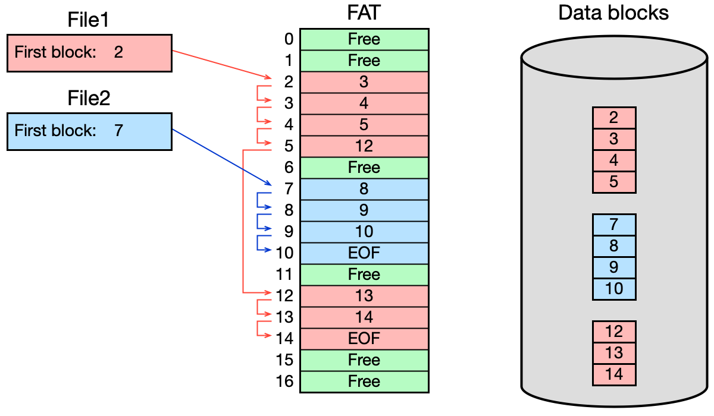
Vlastnosti:
- Informace o volných blocích je přímo v FAT (položka
Free). - Při připojení FS se do RAM načte celá FAT (nebo její část) → rychlý přístup.
- U velkých disků může být FAT velmi velká.
Výpočet limitů FAT
Parametry: datový blok 1 KB, adresa 32 bitů (4 B).
- FAT může mít až
2^32řádek. - Velikost FAT:
2^32 × 4 B = 2^34 B = 16 GB. - Max. velikost FS:
2^32 × 1 KB = 2^42 B = 4 TB. - Max. velikost souboru: teoreticky 4 TB, ale FAT32 omezuje položku délky souboru na 32 bitů → max 4 GB.
U zkoušky
Vzorec: max. velikost FS = 2^(počet bitů adresy) × velikost bloku. Pozor na omezení daná jinými datovými strukturami (délka souboru, počet i-nodů...).
Varianty FAT: FAT12 (12 b adresa), FAT16 (16 b), FAT32 (32 b, fakticky 28 b), exFAT (64 b + bitmapa volných bloků).
FAT: adresář a přístup k souborům¶
Adresář ve FAT obsahuje v každém záznamu: jméno souboru, atributy (typ, velikost), adresu prvního bloku. Pokud se záznam nevejde do jednoho řádku (dlouhé jméno, ACL), rozprostírá se do více záznamů.
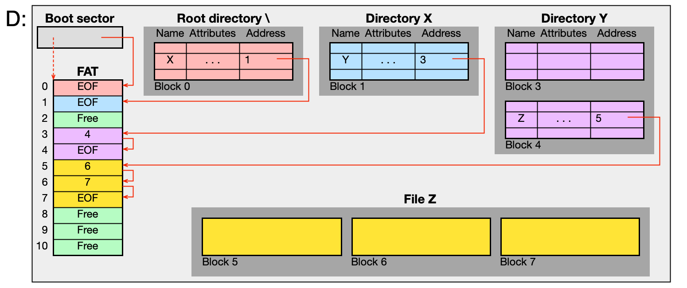
Přístup k souboru D:\X\Y\Z:
- Boot sektor → umístění FAT, záložní FAT a kořenového adresáře.
- Z FAT a kořenového adresáře dohledej podadresář
X, pakY, pak souborZ. - Načti bloky obsahu souboru pomocí řetězu ve FAT.
I-node (Index Node)¶
I-node (index node) je datová struktura pevné velikosti přiřazená každému souboru nebo adresáři. Obsahuje atributy souboru a adresy datových bloků.
Aby bylo možné adresovat soubory různých velikostí, i-node obsahuje tři typy adres:
- 12 přímých adres — ukazují přímo na datové bloky s obsahem souboru.
- 1 adresa nepřímá 1. úrovně — ukazuje na blok, v němž jsou přímé adresy.
- 1 adresa nepřímá 2. úrovně — ukazuje na blok s adresami 1. úrovně.
- 1 adresa nepřímá 3. úrovně — ukazuje na blok s adresami 2. úrovně.
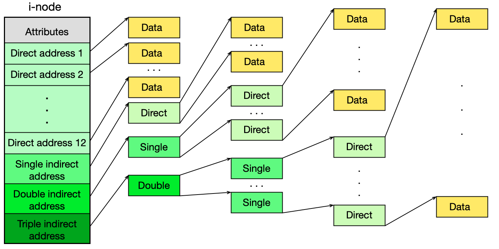
Při zápisu se postupně využívají přímé adresy, pak nepřímé 1., 2. a 3. úrovně podle toho, jak soubor roste.
Výpočet maximální velikosti souboru přes i-node
Parametry: datový blok 4 KB, adresa 32 b = 4 B.
- Počet adres v bloku:
4 KB / 4 B = 2^10 = 1024 - Přímé bloky: 12
- Nepřímé 1. úrovně:
2^10bloků - Nepřímé 2. úrovně:
2^10 × 2^10 = 2^20bloků - Nepřímé 3. úrovně:
2^10 × 2^10 × 2^10 = 2^30bloků - Celkem bloků:
(12 + 2^10 + 2^20 + 2^30) × 4 KB ≈ 2^30 × 4 KB = 4 TB
U zkoušky
Klíčový vzorec: počet adres v bloku = velikost bloku / velikost adresy. Maximální velikost souboru pak = součet datových bloků přes všechny úrovně nepřímého adresování × velikost bloku. U zkoušky bývají zadány konkrétní parametry a je třeba přesně spočítat.
Vlastnosti i-nodů:
- Při otevření souboru se do RAM načte pouze i-node; datové bloky až při čtení/zápisu.
- Velikost i-node je konstantní (nezávislá na velikosti souboru ani FS).
- Počet i-nodů je statický (definován při
mkfs) — je důležité jej správně odhadnout. - U velkých souborů s náhodným přístupem je první přístup pomalejší (nutnost projít vícero úrovní nepřímých adres); další přístupy jsou rychlé díky cache.
- Část datových bloků se spotřebuje na metadata (bloky s adresami) — mírně horší využití prostoru.
UFS: konkrétní implementace i-nodů¶
UFS (Unix File System, také BSD Fast File System / FFS):
- Datový blok: 8 KB (Solaris).
- I-node: 128 B, obsahuje atributy + 15 adres (12 přímých + 3 nepřímé).
- Adresář: jméno souboru + číslo i-nodu (ne atributy!).
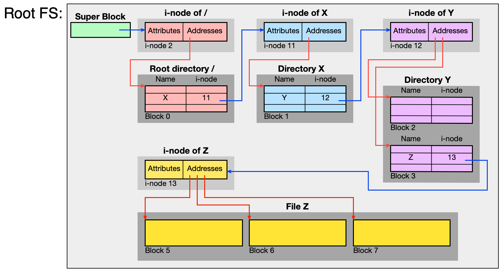
Přístup k souboru /X/Y/Z v UFS:
- Super blok → umístění tabulky i-nodů a datových bloků.
- I-node číslo 2 = kořenový adresář
/. - Z datového bloku kořenového adresáře najdi záznam
X→ číslo i-nodu adresářeX. - Načti i-node adresáře
X→ datový blok adresářeX→ najdiY→ i-node adresářeY. - Načti i-node adresáře
Y→ datový blokY→ najdiZ→ i-node souboruZ. - Načti i-node souboru
Z→ datové bloky obsahu souboruZ.
Adresáře a sdílené soubory¶
Implementace adresářů¶
Obsah adresáře je uložen v datových blocích, stejně jako obsah souboru. Existují dva přístupy k tomu, co adresář obsahuje:
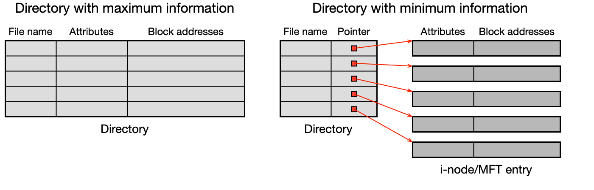
- Adresář obsahuje vše (FAT32 styl) — jméno, atributy, adresu prvního bloku. Jednodušší, ale redundantní (atributy jsou "v adresáři").
- Adresář obsahuje minimum (UFS/NTFS styl) — jen jméno a odkaz na i-node (nebo MFT položku). Atributy jsou v i-nodu. Čistější oddělení metadat od struktury adresáře.
Sdílené soubory (hard link a soft link)¶
Někdy je vhodné, aby jeden soubor byl viditelný z více adresářů (třeba i pod různými jmény).
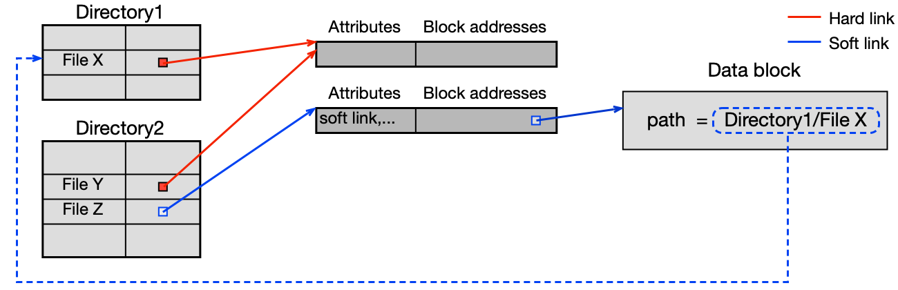
- Hard link — přímý odkaz na i-node (nebo MFT položku); funguje pouze u minimalistických adresářů (UFS, NTFS). Soubor existuje, dokud existuje alespoň jeden hard link. Nelze přes souborový systém (FS boundary).
- Soft link (symbolický link) — odkaz implementovaný jako speciální soubor obsahující cestu k cíli. Funguje přes hranice FS, ale při přejmenování/smazání cíle "visí" (dangling link).
Souborové systémy v OS¶
Dosud jsme se věnovali implementaci FS na disku. Nyní se zaměříme na to, jak OS tyto FS začleňuje do svého jádra a jak optimalizuje přístup k nim.
Virtual File System (VFS) a Installable FS (IFS)¶
VFS (Virtual File System) je vrstva jádra v OS unixového typu, která tvoří rozhraní mezi procesy a konkrétními implementacemi FS. Aplikace volají systémová volání (open, read, write...) přes VFS, které je přesměruje na správný ovladač FS.
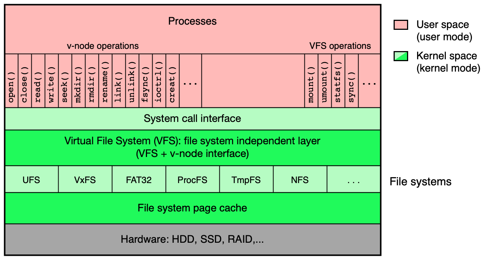
VFS definuje sadu abstraktních objektů (v-node, v-file, v-dirent...) a operací nad nimi; každý konkrétní FS implementuje tyto operace po svém. Výsledkem je, že z pohledu aplikace jsou NFS, UFS, ext4, FAT32 a BTRFS k nerozeznání.
IFS (Installable File System) — ekvivalent ve světě IBM OS/2 a MS Windows; API umožňující OS za běhu načíst ovladač pro nový typ FS.
FUSE (Filesystem in Userspace)¶
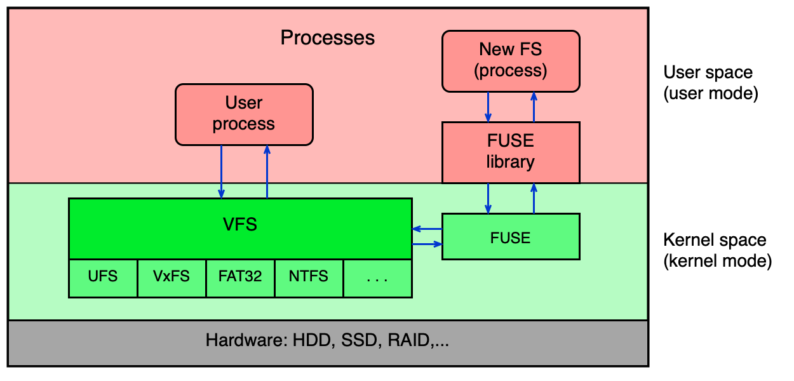
FUSE umožňuje implementovat FS jako uživatelský proces (bez zásahu do jádra). Skládá se z modulu jádra (vlastní FUSE) a uživatelské knihovny.
Nový FS je implementován jako proces, v němž si programátor definuje standardní operace (open, read, write, readdir...). Běžný uživatel pak s FS pracuje standardními nástroji.
Využití FUSE
FUSE je ideální pro pseudoFS (existující jen v RAM), FS nad šifrovanými daty (EncFS), FS přes SSH (sshfs), nebo experimentální FS. Nevýhoda: vyšší latence kvůli přepínání kontextu mezi uživatelským prostorem a jádrem.
Page cache (Block cache)¶
Přístup na disk je řádově pomalejší než přístup do RAM (10 ms vs. mikrosekund). OS proto využívá volnou fyzickou paměť jako Page cache — mezipaměť pro nedávno používané datové bloky z FS.
Page cache v moderních OS
Velikost datových bloků FS bývá záměrně shodná s velikostí stránky virtuální paměti (nebo jejím násobkem/podílem). Page cache pak pracuje přímo s pamětovými stránkami (v novějším Linuxu tzv. folios — větší pamětové celky).
OS udržuje přehled o všech blocích v cache. Při čtení:
- OS hledá blok v Page cache (cache hit → data z RAM, rychle).
- Pokud není (cache miss) → načte z FS (disk I/O), uloží do cache.
Při zápisu existují dvě strategie:
- Write-behind cache (write-back) — modifikace se zapíše do Page cache ihned, na disk se zpožděním. Používá se u interních úložišť. Hrozí ztráta dat při výpadku napájení — OS proto periodicky flushuje (
sync()). - Write-through cache — modifikace se zapíše současně do cache i na disk. Pomalejší, ale bezpečnější. Používá se u přenosných úložišť (USB flash disky).
Příklad Page cache
int fd = open("test.txt", O_RDWR);
read(fd, buf, 2); // (1) cache miss → disk I/O, soubor načten do cache
read(fd, buf, 2); // (2) cache hit → data z RAM, bez disk I/O
write(fd, &x, 1); // (3) zápis do cache; disk I/O dle strategie (write-behind/through)
close(fd); // u write-behind close() ještě neznamená zápis na disk!
sync().
V OS Solaris zobrazí příkaz mdb -k → ::memstat aktuální stav stránek (Kernel, ZFS Metadata, ZFS File Data, Anon, Page cache, Free...). V Linuxu cat /proc/meminfo → řádek Cached.
DNLC (Directory Name Look-up Cache) / Dentry cache¶
Každý přístup k souboru /A/B/C/D vyžaduje projít celou cestou adresáři — v nejhorším případě čtení i-nodů a datových bloků pro každý adresář. To je drahé.
DNLC (Directory Name Look-up Cache v Solarisu) / Dentry cache (v Linuxu) je speciální cache v RAM, která uchovává jména nedávno používaných souborů/adresářů spolu s jejich v-nody.
Vliv DNLC na výkon
Po restartu (prázdná DNLC): ls -l A/B/C/D/E/F/G/H/I/J/K/L trvá ~15 ms. Po druhém spuštění (DNLC naplněna): ~2 ms. Zrychlení 7,5× jen díky cache adresářů.
Block Read Ahead (přednačítání bloků)¶
Přednačítání je dalším způsobem optimalizace. OS předpokládá prostorovou lokalitu — pokud čteme blok N, brzy budeme číst i blok N+1, N+2, ...
Při I/O požadavku na konkrétní blok OS načte zároveň i několik následujících bloků. Tím se výrazně zlepšuje výkon sekvenčního čtení (snižuje počet I/O operací) a efektivněji se využívá šířka pásma RAID polí.
Read Ahead v UFS
UFS v Solarisu: parametr maxcontig určuje, kolik bloků se načítá v jedné operaci (výchozí 32, lze zvýšit na 128 příkazem tunefs). Blok UFS = 8 KB → při maxcontig = 128 se načítá 1 MB najednou.
Žurnálování (Journaling)¶
Operace jako vytvoření souboru se skládají z více kroků: aktualizace bitmapy volných bloků, zápis do adresáře, aktualizace i-nodu, zápis dat. Pokud dojde k pádu systému uprostřed tohoto sledu, FS se ocitne v nekonzistentním stavu.
Žurnálovaný FS (Journaling FS) řeší tento problém:
- Před provedením změn zapíše FS záznam do žurnálu (journal area, zvláštní oblast na disku).
- Teprve po úspěšném zápisu záznamu provede skutečné změny ve FS.
- Po úspěšném dokončení změn odstraní záznam z žurnálu.
- Při pádu systému: po obnově se přehrají záznamy z žurnálu → FS vrácen do konzistentního stavu.
Z výkonových důvodů se do žurnálu typicky ukládají pouze metadata (nikoliv obsah datových bloků) — to je dostatečné pro zachování konzistence struktury FS.
Kde leží žurnál?
Žurnál nemusí být na stejném disku jako FS — může být na rychlejším SSD, což zlepšuje výkon operací vyžadujících zápis do žurnálu.
Žurnálování implementuje většina moderních FS: UFS, Ext3/4, NTFS, JFS, XFS...
Moderní souborové systémy¶
Klasické FS (UFS, Ext2/3/4, FAT32, NTFS) vznikly v 80.–90. letech. S vývojem úložišť (RAID, SSD), narůstající kapacitou a výkonem CPU začaly vznikat moderní FS: ZFS, BTRFS, APFS.
Jejich klíčové vlastnosti:
- Implementace pomocí B stromů / B+ stromů.
- Integrace SW RAIDu a FS do jedné vrstvy.
- Integrita dat — Copy-on-Write transakční model, kontrolní součty dat i metadat.
- Efektivní snapshoty a klony.
- Šifrování a komprese dat.
- Jednodušší administrace.
B stromy a B+ stromy¶
B strom řádu n je vyvážený strom s těmito vlastnostmi:
- Kořen: 2 až n potomků (pokud není listem), 0 až n−1 položek.
- Vnitřní uzel:
ceil(n/2)až n potomků,ceil(n/2)−1až n−1 položek. - List:
ceil(n/2)−1až n−1 položek; všechny cesty od kořene k listům jsou stejně dlouhé. - Data v uzlu:
p0, [k1, d1], p1, [k2, d2], p2, ...kde ki jsou klíče, di data a pi ukazatele na podstromy. Pro klíče v podstromu pod pi platí: vše < k_(i+1) a vše > ki.
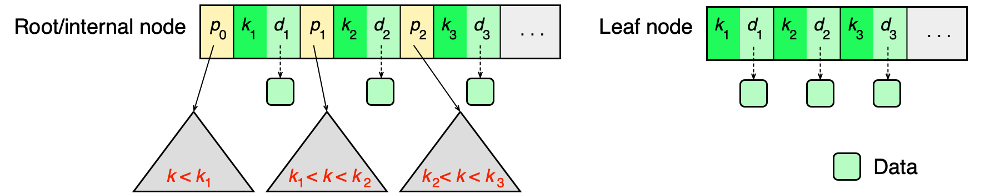
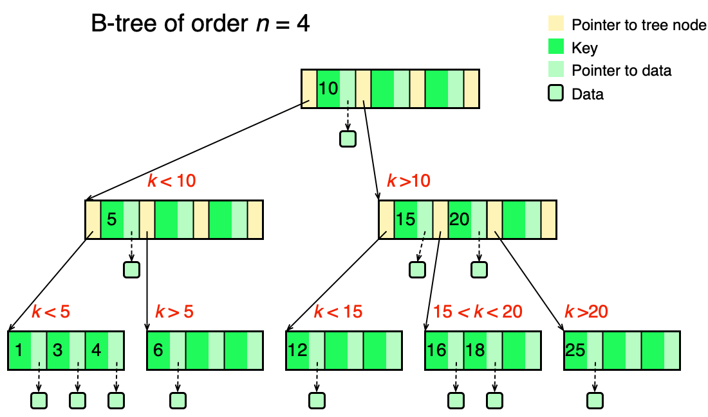
B+ strom — varianta, kde kořen a vnitřní uzly obsahují pouze klíče a ukazatele (bez dat); data jsou uložena výhradně v listech. Listy jsou navíc navzájem propojeny ukazateli na sourozence → efektivní sekvenční průchod.
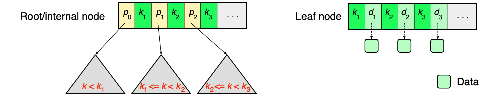
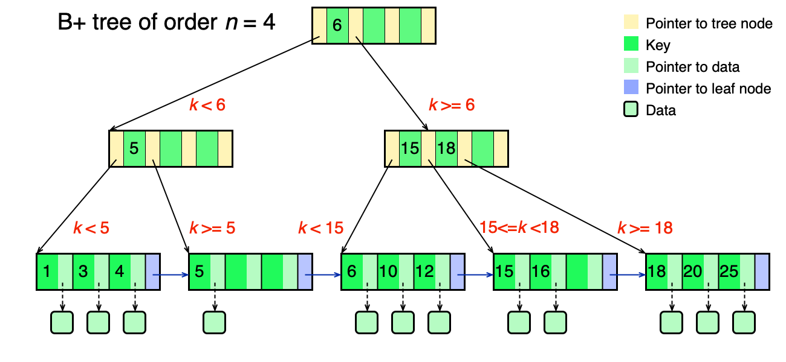
Vlastnosti B/B+ stromů pro FS:
- Vložení/smazání/vyhledání: O(log N).
- Každý uzel obsahuje více klíčů → uzel se vejde do jednoho cache bloku (L1/L2/L3) nebo do jedné stránky RAM, nebo do jednoho sektoru/datového bloku na disku.
- Uzly s klíči lze načíst do paměti; data zůstávají na disku (relevantní pro velké FS).
B+ stromy pro implementaci adresářů
Velký adresář s tisíci soubory lze uložit jako B+ strom indexovaný jménem souboru. Vyhledání souboru je O(log N) místo lineárního průchodu. Tuto strategii používají moderní FS (NTFS, XFS, BTRFS).
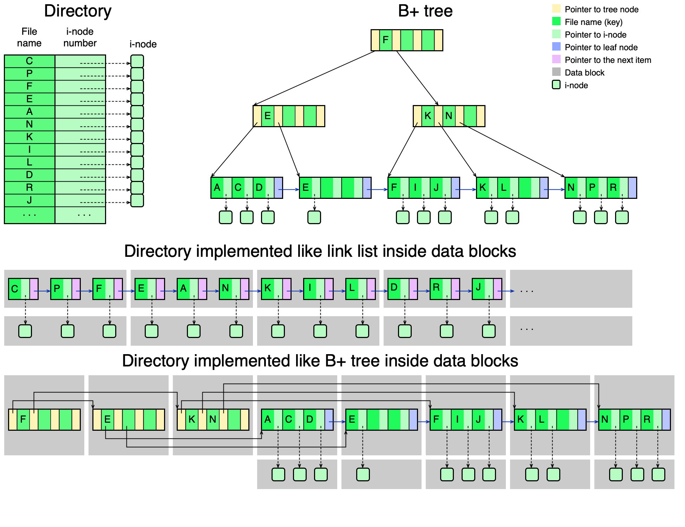
Moderní FS: RAID + FS jako jeden celek¶
Klasický přístup: SW RAID a FS jsou dvě nezávislé vrstvy — nejdřív Volume Manager vytvoří logický disk, pak se na něj nainstaluje FS.
Moderní přístup: SW RAID a FS jsou sloučeny do jedné SW vrstvy:
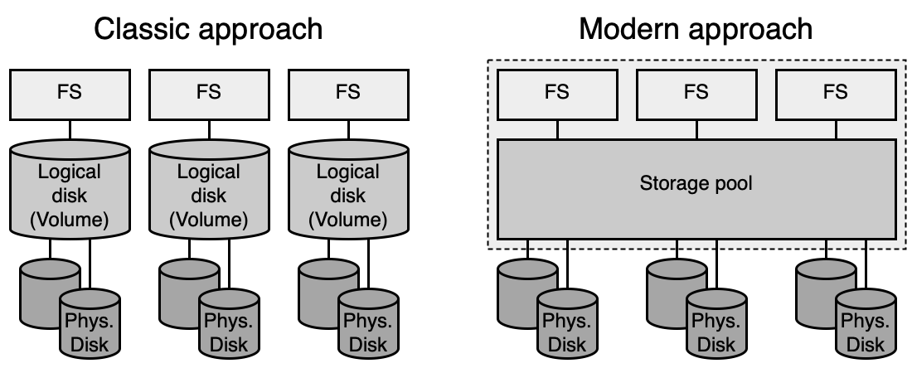
- Fyzické disky se zařadí do poolu (s vlastnostmi konkrétního RAIDu).
- V rámci poolu se vytváří jednotlivé FS (sdílejí kapacitu poolu).
- Výhody: efektivnější sdílení kapacity, jednodušší administrace (zvětšení/zmenšení FS bez složitých operací).
Integrita dat a Copy-on-Write (COW)¶
Klasický přístup: Při modifikaci dat se původní obsah přepíše na místě. Operace probíhá ve více krocích → při pádu uprostřed → nekonzistence.
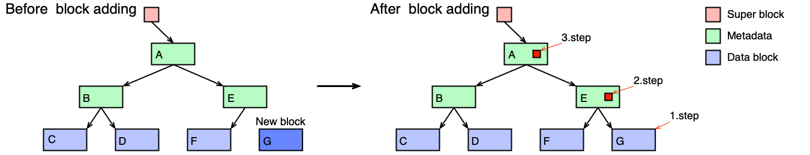
Copy-On-Write (COW): Původní bloky se nikdy nepřepisují. Místo toho se:
- Zapíší nová data do nových bloků.
- Aktualizují se rodičovská metadata (adresy bloků).
- Atomicky se přepíše ukazatel v Super bloku.
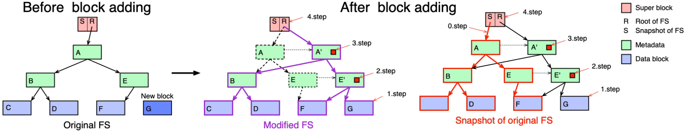
COW zaručuje, že FS je vždy konzistentní — při pádu systému superblok stále ukazuje na starý, konzistentní strom dat. Nová data jsou dosažitelná až po atomickém přepisu superbloku.
COW je zároveň základem pro efektivní snapshoty — snapshot je jen uložení starého ukazatele superbloku.
Typy poškození dat a ochrana¶
Moderní FS rozlišují několik typů poškození:
- Bit corruption — obsah sektoru/bloku byl fyzicky porušen (elektromagnetické záření...).
- Lost writes — operace write nebyla provedena, ale disk potvrdil úspěch.
- Misdirected writes — data zapsána do špatného bloku.
- Torn writes — data zapsána jen částečně, ale potvrzena jako úplná.
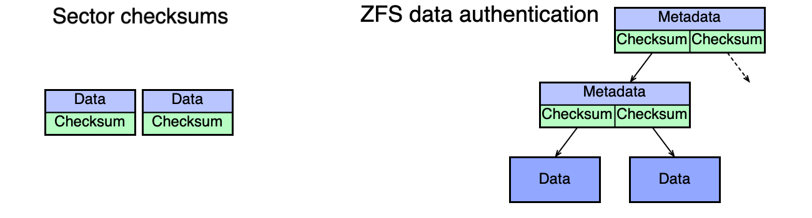
Klasický přístup: Spoléhá pouze na ECC v sektoru — detekuje/opravuje pouze typ 1 (bit corruption). Kontrolní součet je uložen spolu s daty → při misdirected write je kontrolní součet "správný" (ale data jsou na špatném místě).
ZFS data authentication: Kontrolní součty jsou uloženy v rodičovských metadatech (Merkle strom — hash stromu). Kontrolní součet bloku B je uložen v rodiči, nikoli v bloku samotném. Tím lze detekovat a opravit všechny typy 1–4.
Automatická oprava dat (Self-healing)¶
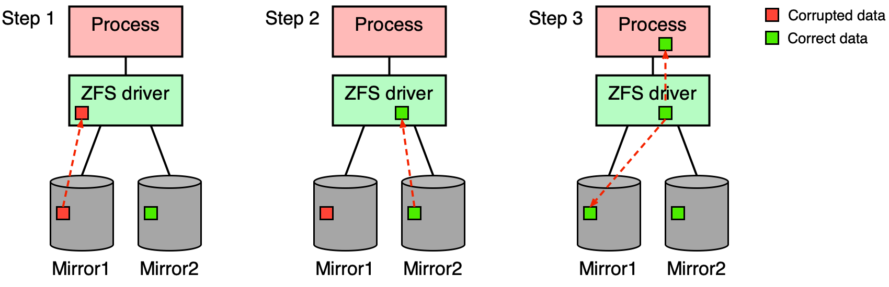
Díky kombinaci kontrolních součtů (detekce) a redundance v RAIDu (obnova) lze nejen detekovat, ale i automaticky opravit poškozená data:
- ZFS načte datový blok z prvního zrcadla → kontrolní součet nesouhlasí → blok poškozený.
- ZFS načte blok z druhého zrcadla → kontrolní součet souhlasí → blok správný.
- ZFS předá správná data procesu a zároveň opraví poškozený blok na prvním zrcadle.
U zkoušky
ZFS = Copy-On-Write + Merkle strom kontrolních součtů + integrace RAIDu. Výsledek: neustálá konzistence, detekce a oprava všech typů poškození dat, efektivní snapshoty.
Shrnutí¶
- HDD ukládá data magneticky na rotující plotny; rychlost přístupu závisí na seek time, rotačním zpoždění a čase přenosu. Sekvenční přístup je řádově rychlejší než náhodný.
- SSD používá NAND flash s floating gate tranzistory; nemá pohyblivé části, konstantní latenci; omezený počet zápisů (závislý na typu SLC/MLC/TLC/QLC).
- RAID sdružuje fyzické disky pro navýšení kapacity, výkonu nebo spolehlivosti. RAID 5 distribuuje paritu, RAID 6 dvojitou paritu; RAID 10 kombinuje zrcadlení a prokládání.
- DAS připojuje úložiště přímo, NAS sdílí na úrovni FS přes síť, SAN poskytuje sektorový přístup přes dedikovanou síť.
- FS layout typicky obsahuje: boot block, super block, struktury volného prostoru, tabulku i-nodů, datové bloky.
- FAT ukládá řetěz bloků souboru v globální tabulce; jednoduchá, ale limitovaná u velkých disků.
- I-node ukládá atributy souboru a adresy bloků (přímé + 1/2/3-úrovňové nepřímé) ve fixní datové struktuře; základ UFS, Ext2/3/4.
- VFS tvoří abstraktní rozhraní nad konkrétními FS v Unixu; FUSE umožňuje implementaci FS v uživatelském prostoru.
- Page cache uchovává nedávno čtené/zapisované bloky v RAM; strategie write-behind (interní FS) vs. write-through (přenosná média).
- DNLC/Dentry cache cachuje výsledky překladu adresářových cest.
- Block Read Ahead přednačítá sousední bloky na základě prostorové lokality.
- Žurnálování chrání FS před nekonzistencí zápisem záznamu změn před jejich provedením.
- B/B+ stromy s O(log N) operacemi jsou základem moderních FS pro indexování adresářů a metadat.
- ZFS/BTRFS integrují SW RAID a FS, používají Copy-on-Write a Merkle stromy kontrolních součtů pro trvalou konzistenci a self-healing.
Klíčové pojmy¶
- Sektor — nejmenší fyzicky adresovatelná jednotka datového úložiště (512 B nebo 4 KB); obsahuje data + ECC.
- Datový blok (cluster) — logická jednotka FS, skupinování sektorů; typicky 1–64 KB dle FS a konfigurace.
- HDD (Hard Disk Drive) — magnetické rotační úložiště; data kódována změnou směru magnetizace na feromagnetických plotnách.
- Perpendicular Recording — moderní technika záznamu HDD s magnetickými doménami orientovanými kolmo k povrchu plotny; umožňuje vyšší hustotu záznamu.
- Seek time — čas potřebný k přesunutí hlaviček HDD nad správný cylindr (1–10 ms).
- Rotational delay — průměrné rotační zpoždění HDD = polovina doby jedné otáčky; při 10 000 RPM ≈ 3 ms.
- CHS (Cylinder-Head-Sector) — starší způsob adresování sektorů HDD podle geometrie disku.
- LBA (Logical Block Addressing) — novější lineární adresování sektorů (od 0 sekvenčně).
- Zone Bit Recording (ZBR) — technika umožňující více sektorů na stopě ve vnějších zónách disku.
- FIFO / SSTF / SCAN / N-step SCAN — algoritmy plánování přístupu na disk; liší se výkonem a spravedlností.
- NCQ (Native Command Queuing) — technologie reorderingu příkazů v řadiči SATA disku.
- SSD (Solid State Drive) — úložiště na bázi NAND flash paměti bez pohyblivých částí.
- Floating gate MOSFET — typ tranzistoru s plovoucí bránou; základ NAND flash buňky.
- SLC / MLC / TLC / QLC — typy NAND flash buněk ukládající 1/2/3/4 bity; liší se rychlostí, trvanlivostí a spolehlivostí.
- NAND flash — organizace flash buněk v sérii analogické hradlu NAND; mazání probíhá po blocích.
- Stránka (NAND) — nejmenší jednotka pro čtení/zápis v NAND flash (4–16 KB).
- Blok (NAND) — skupina stránek; nejmenší jednotka pro mazání v NAND flash.
- FTL (Flash Translation Layer) — firmware SSD překládající LBA adresy na fyzické NAND stránky/bloky.
- Wear leveling — technika rovnoměrného rozložení zápisů na buňky NAND flash pro prodloužení životnosti.
- Garbage collection (SSD) — proces uvolňování neplatných bloků a jejich přípravy pro zápis.
- RAID (Redundant Array of Independent Disks) — sdružení fyzických disků pro kapacitu, výkon a/nebo redundanci.
- RAID 0 (striping) — prokládání dat po blocích na více disky; žádná redundance, maximální výkon.
- RAID 1 (mirroring) — zrcadlení dat na všechny disky; redundance (m−1)/m, čtení rychlejší.
- RAID 10 (RAID 1+0) — kombinace zrcadlení a prokládání; redundance 50 %, vysoký výkon.
- RAID 5 — prokládání + distribuovaná parita; odolnost vůči výpadku 1 disku, využití
(m−1)/m. - RAID 6 — prokládání + dvojitá distribuovaná parita; odolnost vůči výpadku 2 disků, využití
(m−2)/m. - Softwarový RAID — RAID implementovaný Volume Managerem v OS (LVM, Veritas VM).
- Hardwarový RAID — RAID implementovaný dedikovaným HW řadičem s vlastním procesorem a firmwarem.
- DAS (Direct-Attached Storage) — úložiště přímo připojené k systému; OS vidí sektory.
- NAS (Network-Attached Storage) — síťové úložiště sdílené přes NFS/SMB; OS vidí soubory.
- SAN (Storage Area Network) — dedikovaná síť úložišť; OS vidí sektory přes síť; podporuje multihosting a multipathing.
- NFS (Network File System) — síťový protokol pro sdílení FS v unixových systémech.
- SMB/CIFS/Samba — síťový protokol pro sdílení FS v prostředí MS Windows.
- Multihosting — jedno úložiště připojeno k více systémům současně.
- Multipathing — více nezávislých síťových cest mezi systémem a úložištěm.
- FS layout — rozložení dat ve FS: boot block, super block, struktury volného prostoru, tabulka i-nodů, datové bloky.
- Boot block — oblast FS s kódem zavaděče OS nebo prázdná.
- Super block — metadata FS: typ, velikost bloků, obsazenost, adresy klíčových struktur.
- Cylinder Group (CG) — oblast UFS reprezentující skupinu cylindrů; obsahuje vlastní zálohu superbloku a dalších struktur.
- FAT (File Allocation Table) — tabulka adres bloků souboru; řádky obsahují Free/adresu/EOF.
- FAT12/16/32/exFAT — varianty FAT lišící se šířkou adresního pole (12/16/32/64 bitů).
- I-node (index node) — datová struktura pevné velikosti obsahující atributy souboru a adresy datových bloků (přímé + 1/2/3-úrovňové nepřímé).
- Přímá adresa — adresa v i-nodu ukazující přímo na datový blok s obsahem souboru.
- Nepřímá adresa N. úrovně — adresa ukazující na blok obsahující adresy N−1. úrovně.
- UFS (Unix File System / BSD FFS) — klasický unixový FS s i-nody a cylinder groups; inspiroval Ext2/3/4 a HFS+.
- Hard link — přímý odkaz na i-node (nebo MFT položku) z adresáře; soubor existuje, dokud je alespoň jeden.
- Soft link (symbolický link) — speciální soubor obsahující cestu k cíli; funguje přes hranice FS.
- VFS (Virtual File System) — abstraktní vrstva jádra unixového OS oddělující aplikace od konkrétních implementací FS.
- IFS (Installable File System) — API v OS/2 a MS Windows pro dynamické načítání ovladačů FS.
- FUSE (Filesystem in Userspace) — rozhraní umožňující implementaci FS jako uživatelského procesu bez zásahu do jádra.
- Page cache — mezipaměť v RAM pro nedávno použité datové bloky FS; pracuje se stránkami virtuální paměti.
- Write-behind cache (write-back) — zápisová strategie: zápis do cache ihned, na disk se zpožděním.
- Write-through cache — zápisová strategie: zápis do cache i na disk současně; bezpečnější, pomalejší.
- DNLC (Directory Name Look-up Cache) — cache v RAM pro jména adresářů/souborů a jejich v-nody; alias Dentry cache v Linuxu.
- V-node (virtual node) — abstraktní reprezentace souboru/adresáře v rámci VFS.
- Block Read Ahead — přednačítání sousedních datových bloků FS do Page cache na základě principu prostorové lokality.
- Žurnálovaný FS (Journaling FS) — FS zapisující záznamy o změnách do žurnálu před jejich provedením; chrání před nekonzistencí při pádu systému.
- Žurnál (journal) — speciální oblast na disku (nebo externím SSD) pro záznamy o chystaných změnách FS.
- B strom řádu n — vyvážený strom, kde každý vnitřní uzel má ceil(n/2)–n potomků; O(log N) operace.
- B+ strom — varianta B stromu, kde vnitřní uzly obsahují pouze klíče, data jsou jen v listech; listy propojeny ukazateli na sourozence.
- ZFS (Zettabyte File System) — moderní FS integrující SW RAID, COW, Merkle strom kontrolních součtů, snapshoty a deduplikaci.
- BTRFS (B-tree File System) — moderní linuxový FS s podobnými vlastnostmi jako ZFS.
- Copy-on-Write (COW) — technika, kdy se při modifikaci dat nepřepisují původní bloky, ale vytváří se nové; garantuje trvalou konzistenci FS.
- Merkle strom — strom kontrolních součtů, kde každý uzel obsahuje hash svých potomků; použito v ZFS pro detekci všech typů poškození dat.
- Self-healing data — schopnost FS detekovat poškozená data (přes kontrolní součty) a automaticky je opravit (přes redundanci v RAIDu).
- Snapshot — zmrazená kopie stavu FS v daném okamžiku; v COW FS implementovaný jako uložený ukazatel na starý kořen stromu (téměř nulová cena).
- Pool (storage pool) — sdružení fyzických disků do jednoho logického celku v moderních FS; jednotlivé FS sdílejí kapacitu poolu.
- Bit corruption — fyzické poškození obsahu sektoru nebo datového bloku.
- Lost write — disková operace write nebyla provedena, ale disk potvrdil úspěch.
- Misdirected write — data zapsána do nesprávného bloku.
- Torn write — data zapsána pouze částečně, přestože byl oznámen úspěch.
- ECC (Error Correction Code) — kód pro detekci a opravu chyb uložený v sektoru disku.
- fsck — nástroj pro kontrolu a opravu nekonzistentního souborového systému v unixových OS.
- mount / umount — příkazy pro připojení / odpojení FS do stromu adresářů.
- mkfs — příkaz pro vytvoření (formátování) souborového systému.